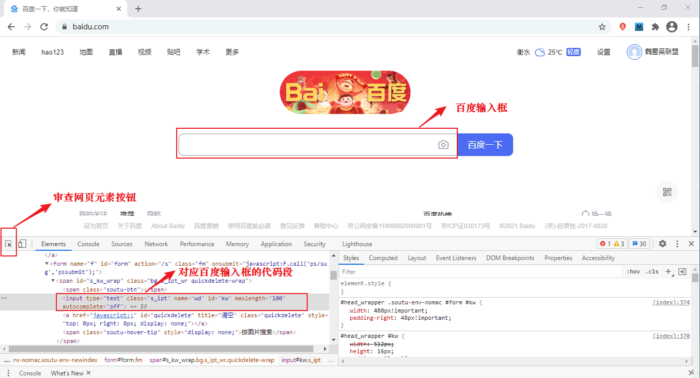
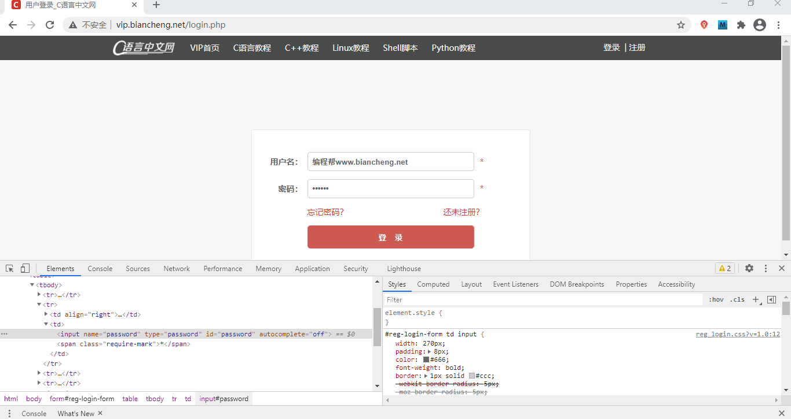
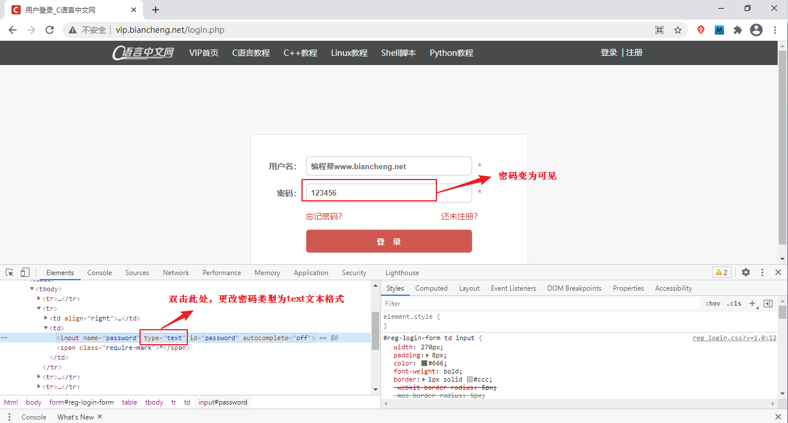
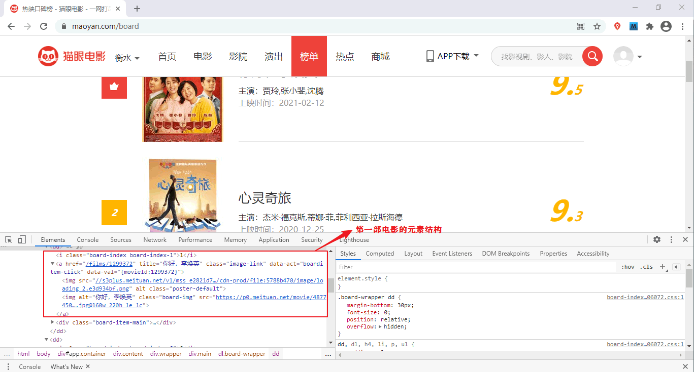
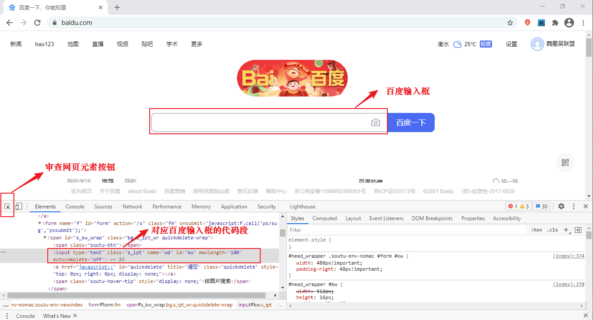
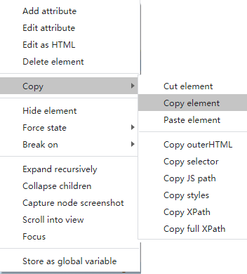
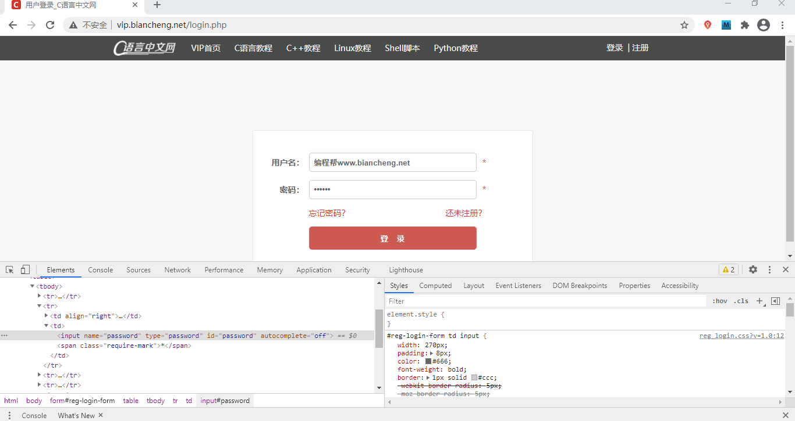
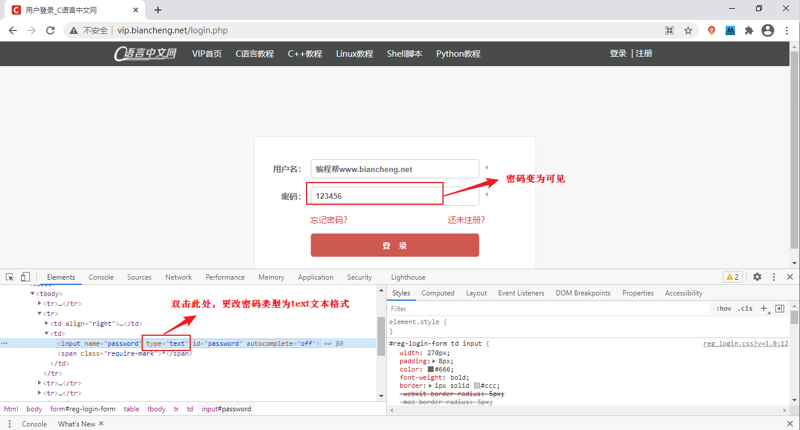
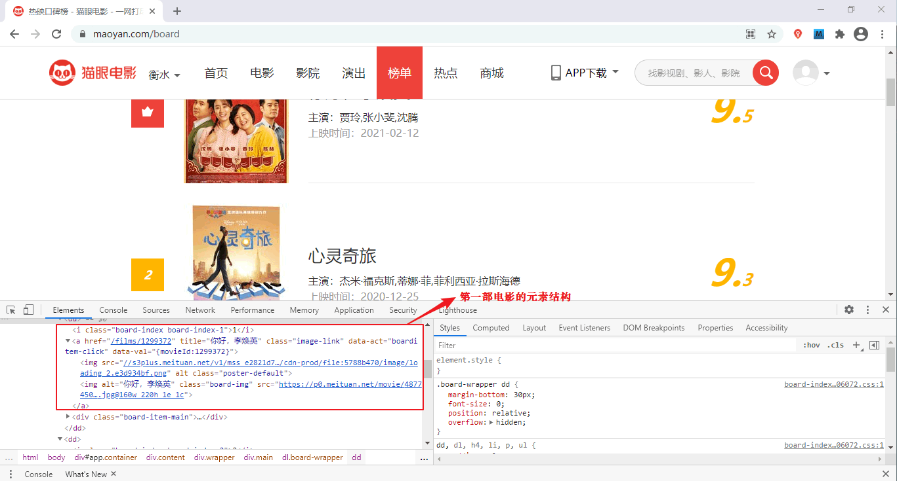

如何审查网页元素
对于一个优秀的爬虫工程师而言，要善于发现网页元素的规律，并且能从中提炼出有效的信息。因此，在动手编写爬虫程序前，必须要对网页元素进行审查。本节将讲解如何使用“浏览器”审查网页元素。
浏览器都自带检查元素的功能，不同的浏览器对该功能的叫法不同， 谷歌(Chrome)浏览器称为“检查”，而 Firefox 则称“查看元素”，尽管如此，但它们的功却是相同的，本教程推荐使用谷歌浏览器。




浏览器都自带检查元素的功能，不同的浏览器对该功能的叫法不同， 谷歌(Chrome)浏览器称为“检查”，而 Firefox 则称“查看元素”，尽管如此，但它们的功却是相同的，本教程推荐使用谷歌浏览器。
检查百度首页
下面以检查百度首页为例：首先使用 Chrome 浏览器打开百度，然后在百度首页的空白处点击鼠标右键（或者按快捷键：F12），在出现的会话框中点击“检查”，并进行如图所示操作：
图1：检查百度首页元素(点击看高清图)
点击审查元素按钮，然后将鼠标移动至您想检查的位置，比如百度的输入框，然后单击，此时就会将该位置的代码段显示出来（如图 1 所示）。最后在该代码段处点击右键，在出现的会话框中选择 Copy 选项卡，并在二级会话框内选择“Copy element”，如下所示：

图2：Copy代码段
百度输入框的代码如下所示：
图2：Copy代码段
<input type="text" class="s_ipt" name="wd" id="kw" maxlength="100" autocomplete="off">依照上述方法，您可以检查页面内的所有元素。
编辑网页代码
通过检查元素也可以更改网页代码，下面通过C语言中文网登录界面进行简单演示：
图2：检查网页元素(点击看高清图)
检查密码框的 HTML 代码，代码如下所示：<input name="password" type="password" id="password" autocomplete="off">只要在显示出的代码段上稍微做一下更改，密码就会变为可见状态。如下图所示：

图3：检查网页元素(点击看高清图)
双击 type="password" 将输入框类型更改为 text，此类操作适用于所有网站的登录界面。但是需要注意，您做的更改仅限本次有效，当关闭网页后，会自动恢复为原来的状态。
检查网页结构
对于爬虫而言，检查网页结构是最为关键的一步，需要对网页进行分析，并找出信息元素的相似性。下面以猫眼电影网为例，检查每部影片的 HTML 元素结构。如下所示：
图4：检查网页结构(点击看高清图)
第一部影片的代码段如下所示：
<div class="board-item-main">
<div class="board-item-content">
<div class="movie-item-info">
<p class="name"><a href="/films/1299372" title="你好，李焕英" data-act="boarditem-click" data-val="{movieId:1299372}">你好，李焕英</a></p>
<p class="star">
主演：贾玲,张小斐,沈腾
</p>
<p class="releasetime">上映时间：2021-02-12</p> </div>
<div class="movie-item-number score-num">
<p class="score"><i class="integer">9.</i><i class="fraction">5</i></p>
</div>
</div>
</div>
接下来检查第二部影片的代码，如下所示：
<div class="board-item-main">
<div class="board-item-content">
<div class="movie-item-info">
<p class="name"><a href="/films/553231" title="心灵奇旅" data-act="boarditem-click" data-val="{movieId:553231}">心灵奇旅</a></p>
<p class="star">
主演：杰米·福克斯,蒂娜·菲,菲利西亚·拉斯海德
</p>
<p class="releasetime">上映时间：2020-12-25</p> </div>
<div class="movie-item-number score-num">
<p class="score"><i class="integer">9.</i><i class="fraction">3</i></p>
</div>
</div>
</div>
经过对比发现，除了每部影片的信息不同之外，它们的 HTML 结构是相同的，比如每部影片都使用<dd></dd>标签包裹起来。这里我们只检查了两部影片，在实际编写时，你可以多检查几部，从而确定它们的 HTML 结构是相同的。
提示：通过检查网页结构，然后发现规律，这是编写爬虫程序最为重要的一步。
关注公众号「站长严长生」，在手机上阅读所有教程，随时随地都能学习。内含一款搜索神器，免费下载全网书籍和视频。

微信扫码关注公众号